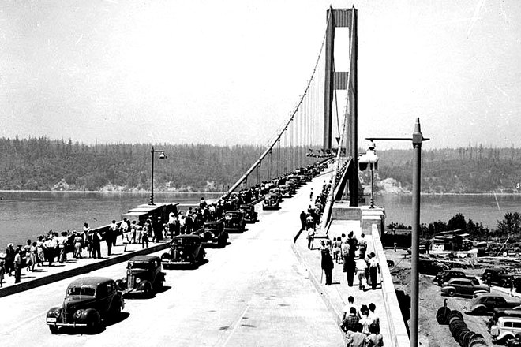
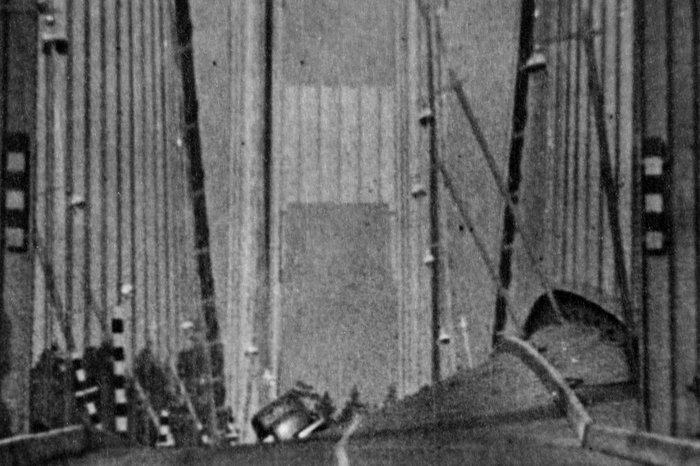
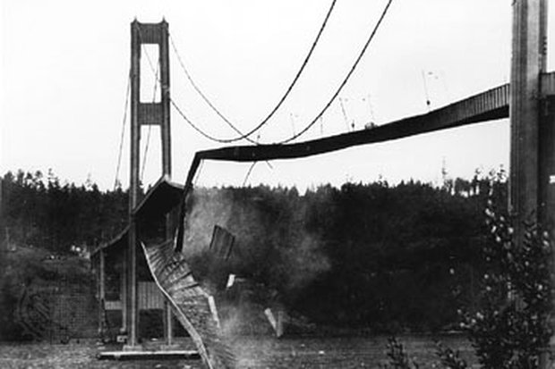

Ảnh chụp 29 · 8 · 1940
mười tuần trước khi sập
Cầu Tacoma
Narrows sập
7 · 11 · 1940 · Bang Washington, Mỹ · mở được 4 tháng 6 ngày

Cây cầu đã lắc từ trước khi mở
Ngay từ lúc lắp mặt cầu, thợ dựng đã thấy nó nhấp nhô mỗi khi có gió và đặt cho nó biệt danh “Galloping Gertie” — con Gertie phi nước đại.
Suốt bốn tháng, cái lắc ấy được xem là chuyện bình thường.
Mặt cầu gợn sóng
Gió đo được 61 km/h. Mặt cầu nhấp nhô theo chiều dọc — đúng cái tật đã có từ ngày lắp, nên không ai coi là bất thường.

Sóng chuyển thành xoắn
Gió lên 68 km/h và một vòng kẹp cáp giữa nhịp bị trượt. Chuyển động đổi kiểu hẳn: mặt cầu vặn xoắn, có lúc nghiêng gần 45°.

Nhịp chính đứt rời
Mặt cầu xé rời khỏi hệ dây treo và rơi xuống eo biển, kéo theo chiếc xe cùng con chó mắc kẹt bên trong — nạn nhân duy nhất của cả vụ việc.
Thứ giật sập cây cầu không phải cơn gió mạnh,
mà là chính chuyển động của nó.
86 năm sau, vụ việc để lại ba thứ
-
01
Một lời giải thích sai
Sách vật lý gọi đây là “cộng hưởng” suốt nửa thế kỷ. Cơ chế thật là rung xoắn khí động — cầu tự bơm năng lượng cho chính mình.
-
02
Một cây cầu làm lại
Thông xe năm 1950, sau 200 cấu hình thử trong hầm gió: mặt cầu đổi từ dầm bản đặc sang giàn thép hở sâu gấp bốn.
-
03
Một xác cầu
Phần rơi xuống nước thành rạn nhân tạo, năm 1992 được xếp hạng di tích để chặn người trục vớt sắt vụn.
